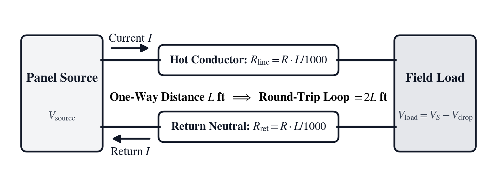
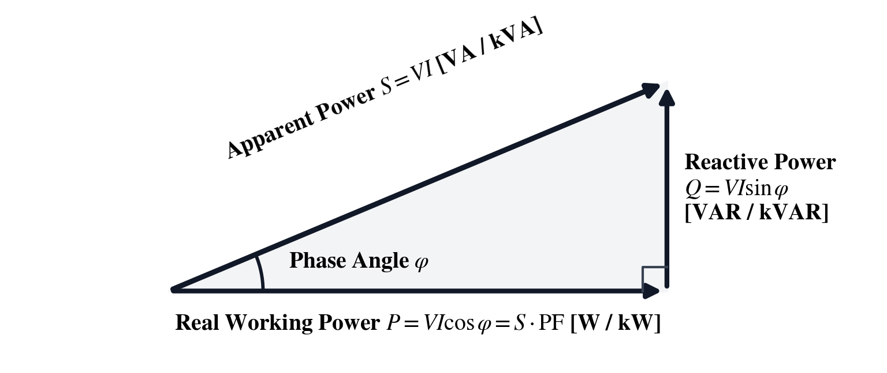
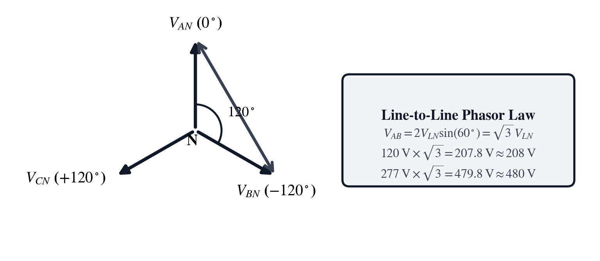
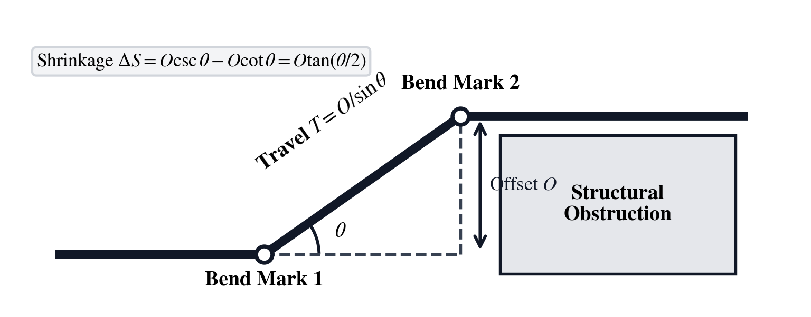
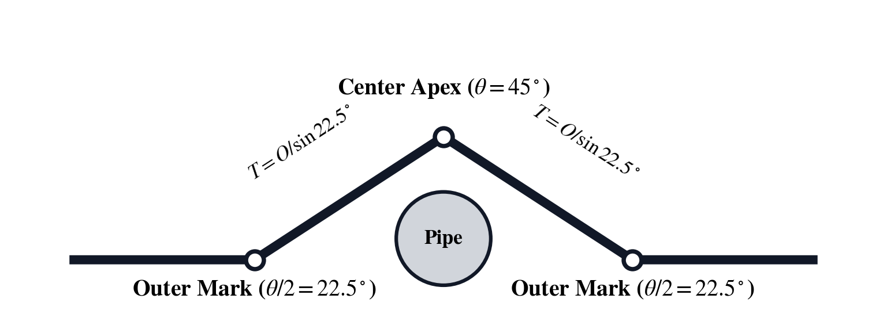
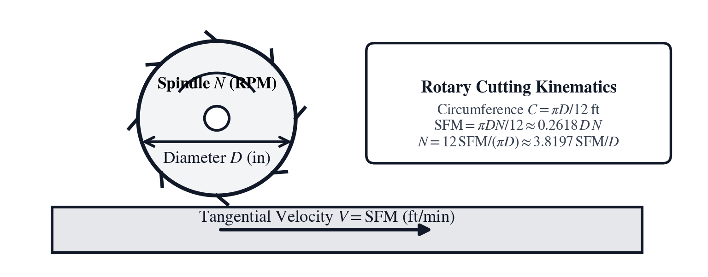
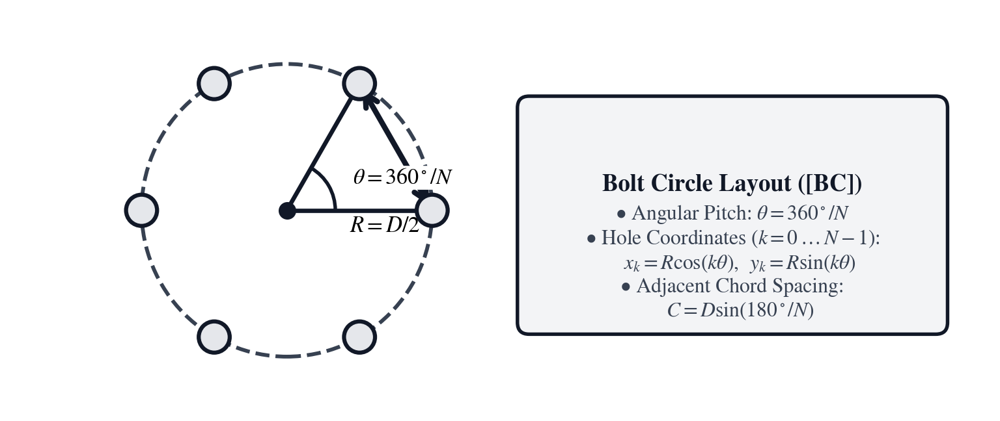
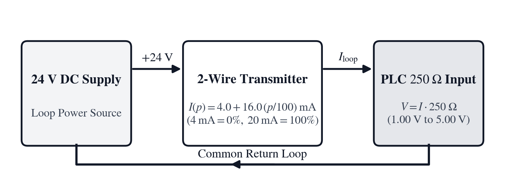

Unit II: Electrical Power, Conduit Geometry & Industrial Trades
In 1826, in a physics laboratory at the Jesuit Gymnasium of Cologne, Georg Simon Ohm abandoned the unstable zinc-copper acid cells of Alessandro Volta and connected a bismuth-copper thermocouple—with one junction immersed in boiling water and the other packed in crushed ice—across test wires of varying lengths and diameters. In textbook schematics, wires are drawn as frictionless black lines of zero resistance, alternating current behaves like direct-current resistors, steel conduits turn sharp corners without bending radii, and industrial sensors report directly in pounds per square inch or gallons per minute. Through his torsion galvanometer, Ohm proved in Die galvanische Kette, mathematisch bearbeitet (1827) that every metallic conductor opposes electron flow in direct proportion to its length \(L\) and in inverse proportion to its cross-sectional area \(A\). Whenever an industrial feeder carries current \(I\) over hundreds of feet of copper or aluminum wire, the conductor's series resistance \(R\) drops a portion of the supply voltage (\(V_{\text{drop}} = IR\)) and converts that electrical energy into Joule heat (\(P_{\text{heat}} = I^2 R\)) trapped inside the raceway.
Sixty years after Ohm's experiments, Nikola Tesla's 1888 polyphase rotating magnetic field, Mikhail Dolivo-Dobrovolsky's 1891 three-phase transmission line from Lauffen am Neckar to Frankfurt, and Charles Proteus Steinmetz's 1893 symbolic phasor calculus established Three-Phase Alternating Current as the backbone of industrial power. Whereas single-phase power pulsates to zero twice every cycle (\(120\text{ times per second}\) on a \(60\text{ Hz}\) grid), three sinusoidal phase voltages staggered by \(120^\circ\) never cross zero simultaneously, delivering smooth torque to induction motors. Vector addition across \(120^\circ\) phase angles introduces the geometric factor \(\mathbf{\sqrt{3} \approx 1.73205}\) ([g] [kVA], [g] [FLA]), while inductive magnetic energy storage shifts current behind voltage by phase angle \(\phi\), scaling working power by the Power Factor \(\text{PF} = \cos\phi\) ([PF]).
Around those electrical feeders, industrial tradespeople solve coupled geometric, mechanical, and fluid relationships across the plant floor. Electricians bend rigid steel and thin-wall EMT conduit around structural steel beams using right-triangle cosecant multipliers ([OFS], [f] [MIT], [g] [FIT]), pipe schedule and wall-thickness tables ([f] [SCH], [g] [WAL]), and NEC Chapter 9 cross-sectional area limits ([g] [▦]). Machinists follow Frederick Winslow Taylor's 1906 metal-cutting laws (On the Art of Cutting Metals) to spin carbide end-mills at the rotational speed ([f] [SFM], [g] [RPM]), thread tap drill diameter ([f] [TAP]), and bolt-circle chord spacing ([g] [BC]) required to machine precision flanges without tool chatter, while instrumentation and fluid-power technicians size control valves ([g] [Cᵥ]), pipe flow continuity ([PIP]), centrifugal pumps ([PMP]), net positive suction head ([g] [NPH]), and noise-immune \(4\text{--}20\text{ mA}\) current loops ([mA], [f] [RTD]).
To serve master electricians, pipefitters, machinists, and plant engineers in the field, the SC-14 Industrial Trades, Electrical & Mechanical instrument unites three architectural pillars: configurable RPN stack depth (4-LV, 8-LV, or deep stack so register capacity is never a bottleneck), dual-mode domain keys that execute immediate stack calculations when values sit in Registers \(Z\), \(Y\), and \(X\) or open a bidirectional Equation Solver workspace ([XEQ] with softkeys [LFU0]–[LFU5] for AWG, FLA, KVA, BEND, SFM, OHM, PF, BOLT, PIP, CV, and PMP), and fractional [f] [f-i] entry paired with live NEC and trade lookup tables ([g] [▦]):
| Chapter | Narrative Problem | Mathematical Concepts | Domain Keys & Workspaces |
|---|---|---|---|
| Chapter 4 | Diagnosing why a \(480\text{ V}\) three-phase gantry crane trips under load at the end of a \(450\text{ ft}\) copper feeder and correcting its power factor | Circular mils, NEC Table 8 wire resistance, \(1\phi/3\phi\) line voltage drop, \(\sqrt{3}\) Wye phasors, AC power triangles, and parallel impedance | [AWG], [PF], [g] [FLA], [g] [kVA], [f] [Ω], [f] [MTR], [x∥y], [f] [▸kW], [g] [▸HP] |
| Chapter 5 | Routing a parallel bank of four EMT conduits over a \(6\text{ in.}\) boiler-room I-beam and steam header, then verifying NEC \(40\%\) raceway fill | Cosecant offset travel, half-angle tangent conduit shrinkage, 3D rolling offsets, 3-point saddle geometry, and NEC cross-sectional fill | [OFS], [f] [MIT], [g] [FIT], [f] [SCH], [g] [WAL], [f] [f-i], [g] [▦], [g] [▸mm], [g] [▸in] |
| Chapter 6 | Eliminating chatter on a \(\varnothing\,0.500\text{ in.}\) carbide end-mill cutting 4140 steel, verifying hydraulic clamping force, sizing a coolant valve, and calibrating a \(4\text{--}20\text{ mA}\) loop | Tangential surface speed ([f] [SFM]), spindle [g] [RPM], thread tap drills ([f] [TAP]), bolt circles ([g] [BC]), pipe flow ([PIP]), valve \(C_v\) ([g] [Cᵥ]), pump power ([PMP]), [g] [NPH], and \(4\text{--}20\text{ mA}\) loops ([mA]) | [f] [SFM], [g] [RPM], [f] [TAP], [g] [BC], [PIP], [g] [Cᵥ], [PMP], [g] [NPH], [g] [ρw], [mA], [f] [RTD], [f] [▸PSI], [g] [▸lbf], [f] [▸GPM] |
Chapter 4: The Voltage Drop on Pier 14's Crane Feeder
At a container terminal on Pier 14, a newly commissioned \(480\text{ V}\) three-phase ship-to-shore gantry crane rated at \(S = 75\text{ kVA}\) (\(I_L \approx 90.21\text{ A}\) at lagging power factor \(\text{PF} = 0.80\)) trips its under-voltage relay whenever the hoist motor lifts a loaded forty-foot container at full speed. The marine electrical contractor fed the pier-end crane disconnect through a one-way conduit run of \(L = 450\text{ ft}\) from the substation switchgear using #2 AWG copper conductors, which have an ampacity of \(115\text{ A}\) at \(75^\circ\text{C}\) under NEC Table 310.16—seemingly plenty of thermal capacity for a \(90.21\text{ A}\) load.
What the contractor overlooked is the physical resistance of \(900\text{ feet}\) of round-trip copper path along the pier. If a feeder is sized solely by ampacity without checking Voltage Drop ([AWG]) over a \(450\text{ ft}\) run, two failure modes compound each other: first, series \(I R\) drop starves the crane's \(480\text{ V}\) terminals below the NEC \(3\%\) branch/feeder threshold (\(14.4\text{ V}\)); second, because an AC induction hoist motor delivers constant mechanical shaft power (\(P = \sqrt{3}\,V_{LL} I_L \cos\phi\)), a drop in terminal voltage \(V_{LL}\) forces the motor to draw higher line current \(I_L\), which further increases \(I^2 R\) heating inside the conduit and trips the magnetic-thermal overload. To fix Pier 14's crane feeder before the next cargo vessel docks, the port electrical engineer must evaluate the exact circular-mil cross-section and NEC Table 8 resistance ([AWG]), compute the three-phase voltage drop and active/reactive power triangle ([PF], [g] [kVA], [g] [FLA], [f] [Ω]), solve backward in the AWG workspace for maximum allowable run lengths and minimum wire gauges ([D], [R], [L], [I], [G]), and compare upsizing the feeder against running two parallel conductors per phase ([x∥y]).
Conductor Resistivity, Circular Mils, and Feeder Voltage Drop
Sizing a long industrial feeder requires linking the geometric cross-section of a round metallic conductor to its ohmic resistance per thousand feet and evaluating the series voltage drop across single-phase and three-phase paths.
Circular Mil Cross-Sections and American Wire Gauge Resistivity
In Euclidean geometry, a cylindrical wire of diameter \(d\) has cross-sectional area \(A = \frac{\pi}{4}d^2\). To eliminate the transcendental factor \(\pi/4\) from field cable tables, North American electrical engineering defines the Circular Mil (\(\text{CM}\)) as the area of a circle whose diameter is exactly one mil (\(1\text{ mil} = 0.001\text{ in}\)), so area in circular mils equals the square of the diameter in mils:
In these expressions, \(d_{\text{mils}}\) is the conductor diameter in thousandths of an inch, \(L\) is the conductor length in feet, and \(K\) is the material's specific resistance constant (in \(\Omega\cdot\text{cmil/ft}\) at \(75^\circ\text{C}\) operating temperature), equal to \(K_{\text{Cu}} = 12.9\ \Omega\cdot\text{cmil/ft}\) for uncoated copper and \(K_{\text{Al}} = 21.2\ \Omega\cdot\text{cmil/ft}\) for aluminum (both listed in the [g] [▦] NEC reference table). Solid and stranded building conductors are indexed on the logarithmic American Wire Gauge ([AWG]) scale, in which smaller gauge numbers designate thicker conductors that double in cross-sectional area every three gauge steps down. NEC Chapter 9, Table 8 tabulates the direct-current resistance \(R_{1000}\) in ohms per thousand feet (\(\Omega/\text{kft}\) at \(75^\circ\text{C}\)) alongside NEC Table 310.16 \(75^\circ\text{C}\) copper ampacities:
| Wire Size ([AWG]) | Circular Mils (\(\text{CM}\)) | Copper Resistance \(R_{1000}\) (\(\Omega/\text{kft}\) at \(75^\circ\text{C}\)) | \(75^\circ\text{C}\) Copper Ampacity (\(\text{A}\)) |
|---|---|---|---|
#14 AWG (14) |
\(4{,}110\) | \(3.07\ \Omega/\text{kft}\) (\(3.14\) coated) | \(20\text{ A}\) (\(15\text{ A}\) OCPD rule) |
#12 AWG (12) |
\(6{,}530\) | \(1.93\ \Omega/\text{kft}\) (\(1.98\) coated) | \(25\text{ A}\) (\(20\text{ A}\) OCPD rule) |
#10 AWG (10) |
\(10{,}380\) | \(1.24\ \Omega/\text{kft}\) (\(1.29\) coated) | \(35\text{ A}\) (\(30\text{ A}\) OCPD rule) |
#8 AWG (8) |
\(16{,}510\) | \(0.778\ \Omega/\text{kft}\) | \(50\text{ A}\) |
#6 AWG (6) |
\(26{,}240\) | \(0.491\ \Omega/\text{kft}\) | \(65\text{ A}\) |
#4 AWG (4) |
\(41{,}740\) | \(0.308\ \Omega/\text{kft}\) | \(85\text{ A}\) |
#2 AWG (2) |
\(66{,}360\) | \(0.194\ \Omega/\text{kft}\) | \(115\text{ A}\) |
#1 AWG (1) |
\(83{,}690\) | \(0.154\ \Omega/\text{kft}\) | \(130\text{ A}\) |
#1/0 AWG (0) |
\(105{,}600\) | \(0.122\ \Omega/\text{kft}\) | \(150\text{ A}\) |
Single-Phase and Three-Phase Feeder Voltage Drop and Parallel Conductors
In a single-phase circuit located a one-way physical conduit distance \(L\) (in \(\text{ft}\)) from the panelboard, load current \(I\) (in \(\text{A}\)) travels \(L\) feet out along the ungrounded hot conductor and \(L\) feet back along the return conductor, traversing a total series path of \(2L\text{ feet}\).

Whether expressed via NEC Table 8 resistance \(R_{1000}\) (\(\Omega/\text{kft}\)) or specific resistivity \(K\) and circular mils \(\text{CM}\), the single-phase line Voltage Drop \(V_{\text{drop},1\phi}\) ([AWG]) and its balanced three-phase counterpart \(V_{\text{drop},3\phi}\) (where return currents share phases separated by \(120^\circ\), replacing the round-trip factor \(2\) with \(\sqrt{3} \approx 1.73205\)), together with the combined resistance \(R_{\parallel}\) of two parallel conductors or loads \(R_1\) and \(R_2\) ([x∥y]), obey:
Here \(R_{1000}\) is the NEC Table 8 conductor resistance in \(\Omega/\text{kft}\), \(L\) is the one-way run length in feet, \(I\) is the line current in amperes, and \(R_1 \parallel R_2 = (R_1^{-1} + R_2^{-1})^{-1}\) is the harmonic-mean parallel operator—the exact same reciprocal sum that governs thin-lens focal length relations (\(\frac{1}{f} = \frac{1}{d_o} + \frac{1}{d_i}\)) in Unit IV (SC-24) and shunt reactance networks in Unit V (SC-50). On Pier 14's three-phase \(480\text{ V}\) crane feeder carrying \(I = 90.211\text{ A}\) over \(L = 450\text{ ft}\) of #2 AWG copper (\(R_{1000} = 0.194\ \Omega/\text{kft}\)), the single-phase equivalent drop is \(V_{\text{drop},1\phi} = \frac{2 \times 450 \times 90.211 \times 0.194}{1000} \approx 15.75\text{ V}\) and the balanced three-phase line voltage drop is \(V_{\text{drop},3\phi} = \frac{\sqrt{3} \times 450 \times 90.211 \times 0.194}{1000} \approx \mathbf{13.64\text{ V}}\) (\(2.84\%\) at rated steady current), which spikes to \(\mathbf{20.46\text{ V}}\) (\(4.26\%\), starving the crane terminals down to \(459.5\text{ V}\)) during a \(150\%\) hoist starting surge. Paralleling two #1/0 AWG conductors per phase (\(R_1 = R_2 = 0.122\ \Omega/\text{kft}\), so \(0.122 \parallel 0.122 = \mathbf{0.061\ \Omega/\text{kft}}\) via [x∥y]) cuts the steady three-phase voltage drop to \(\frac{\sqrt{3} \times 450 \times 90.211 \times 0.061}{1000} \approx \mathbf{4.29\text{ V}}\) (\(0.89\%\)).
Three-Phase Rotating Phasors, Power Triangles, and Reactive Compensation
Understanding why the crane draws \(90.21\text{ A}\) to perform \(60\text{ kW}\) of mechanical lifting work requires examining the phase angle between alternating voltage and current and the \(\sqrt{3}\) geometry of three-phase Wye phasors.
Alternating Current Phase Shift, Power Factor, and Capacitor Sizing
In a resistive load such as an immersion heater, alternating current rises and falls in phase with alternating voltage. In an inductive load such as the Pier 14 gantry crane hoist motor, the alternating magnetic field stores and returns reactive energy every quarter-cycle, causing the RMS line current \(I\) to lag behind the RMS supply voltage \(V\) by a phase angle \(\phi\). Because only the current component in phase with voltage (\(I\cos\phi\)) performs real mechanical or thermal work, AC power forms a right triangle governed by the dimensionless Power Factor \(\text{PF} = \cos\phi \in [0, 1]\) ([PF]), linking Real Working Power \(P\) (in watts, \(\text{W}\), or kilowatts, \(\text{kW}\), converted via [f] [▸kW] and [g] [▸HP]), Reactive Magnetizing Power \(Q\) (in volt-amperes reactive, \(\text{VAR}\), or \(\text{kVAR}\)), and Apparent Power \(S\) (in volt-amperes, \(\text{VA}\), or \(\text{kVA}\)):

In this power triangle, \(S\) is the hypotenuse that sizes transformers, switchgear, and feeder conductors, \(P\) is the adjacent horizontal leg converted into shaft work and heat, and \(Q\) is the opposite vertical leg oscillating between the source and the motor's magnetic field—forming the exact electrical counterpart to the North-clockwise surveying projection (\(\Delta N = D\cos\alpha, \Delta E = D\sin\alpha\)) and aeronautical wind triangle in Unit I (SC-35). On Pier 14's crane rated at apparent power \(S = 75.0\text{ kVA}\) and lagging power factor \(\text{PF} = 0.80\) (\(\phi = \arccos(0.80) \approx 36.87^\circ\), \(\sin\phi = 0.60\)), the real working power is \(P = 75.0 \times 0.80 = \mathbf{60.0\text{ kW}}\) (\(80.46\text{ HP}\) via [g] [▸HP]) and the reactive magnetizing demand is \(Q = 75.0 \times 0.60 = \mathbf{45.0\text{ kVAR}}\). Installing a parallel \(25.0\text{ kVAR}\) capacitor bank at the crane disconnect supplies \(25.0\text{ kVAR}\) locally, reducing net reactive draw from the feeder to \(Q_{\text{new}} = 45.0 - 25.0 = 20.0\text{ kVAR}\), shrinking apparent feeder demand to \(S_{\text{new}} = \sqrt{60.0^2 + 20.0^2} \approx \mathbf{63.25\text{ kVA}}\), and raising the corrected power factor to \(\text{PF}_{\text{new}} = 60.0 / 63.2456 \approx \mathbf{0.9487}\).
Three-Phase Wye Phasor Geometry and Motor Full-Load Current
In a balanced three-phase Wye (\(Y\)) distribution system, three transformer windings share a common grounded neutral center point \(N\) and radiate outward at phase angles \(0^\circ\), \(120^\circ\), and \(240^\circ\). If each winding develops a phase-to-neutral magnitude \(V_{LN}\), the line-to-line voltage \(V_{LL}\) measured between any two outer phase conductors follows from the Law of Cosines across the \(120^\circ\) isosceles triangle formed by Neutral \(N\), Phase \(A\), and Phase \(B\):

This geometric ratio \(\sqrt{3} \approx 1.73205\) produces the two standard commercial voltage systems in North America: multiplying \(V_{LN} = 120\text{ V}\) by \(\sqrt{3}\) gives \(207.85\text{ V}\) (\(208\text{Y}/120\text{ V}\)), and multiplying \(V_{LN} = 277\text{ V}\) by \(\sqrt{3}\) gives \(479.78\text{ V}\) (\(480\text{Y}/277\text{ V}\)). Because each of the three phases delivers apparent power \(V_{LN} I_L = (V_{LL}/\sqrt{3})I_L\), total three-phase apparent power across all three phases is \(3(V_{LL}/\sqrt{3})I_L = \sqrt{3}\,V_{LL}I_L\). Expressing three-phase apparent power \(S_{\text{kVA}}\) in kilovolt-amperes ([g] [kVA]) to solve for per-phase line current \(I_L\), or converting rated mechanical output horsepower \(\text{HP}\) (\(1\text{ HP} = 746\text{ W}\)) and fractional efficiency \(\eta \in (0, 1]\) into three-phase motor Full-Load Amps \(I_{\text{FLA}}\) ([g] [FLA]), gives:
Here \(V_{LL}\) is the line-to-line RMS voltage, \(I_L\) is the per-phase line current in amperes, and \(746\text{ W/HP}\) converts mechanical horsepower into electrical watts. On Pier 14's \(480\text{ V}\) three-phase feeder supplying \(S_{\text{kVA}} = 75\text{ kVA}\), dividing \(75{,}000\text{ VA}\) by \(\sqrt{3} \times 480 \approx 831.384\text{ V}\) via [g] [kVA] yields the uncorrected line current \(I_L \approx \mathbf{90.21\text{ A}}\) (\(90.211\text{ A}\)); after capacitor correction to \(S_{\text{new}} = 63.2456\text{ kVA}\), the feeder line current drops to \(I_{L,\text{new}} \approx \mathbf{76.07\text{ A}}\).
Diagnosing the Pier 14 Feeder on the Stack and AWG Solver Workspace
On the SC-14, electrical power keys operate both as immediate RPN stack shortcuts—computing 1-phase copper voltage drop \(V_{\text{drop}} = 2 \cdot L \cdot I \cdot R_{1000} / 1000\) when current \(I\) is in Register \(Z\), length \(L\) (in \(\text{ft}\)) is in Register \(Y\), and wire gauge (14..0) is in Register \(X\) via [AWG], scaling three-phase apparent power by \(\sqrt{3}\,V_{LL}\) via [g] [kVA], evaluating AC real power via [PF], and combining parallel impedances via [x∥y]—and as bidirectional Equation Solver workspaces (AWG, FLA, KVA, PF, OHM, and MTR):
| Button | Operation | Register Z | Register Y | Register X | Governing Expression & Workspace Variables |
|---|---|---|---|---|---|
| [AWG] | NEC Copper Voltage Drop & Solver | Current \(I\ (\text{A})\) | Length \(L\ (\text{ft})\) | Gauge \(G\) | \(V_{\text{drop}} = 2 \cdot L \cdot I \cdot R_{1000} / 1000\); AWG ([D], [R], [L], [I], [G]) |
| [PF] | AC Working Power & Power Factor | Voltage \(V\) | Current \(I\) | Power Factor \(\text{PF}\) | 3-arg \(P = V \cdot I \cdot \text{PF}\) (2-arg \(P/S\)); PF ([P], [V], [I], [F]) |
| [g] [kVA] | Three-Phase Transformer Current | — | Power \(S\ (\text{kVA})\) | Voltage \(V_{LL}\) | \(I_L = (S \times 1000) / (\sqrt{3} \cdot V_{LL})\); KVA ([S], [V], [I]) |
| [g] [FLA] | Three-Phase Motor Full-Load Amps | — | Power \(P\ (\text{HP})\) | Voltage \(V_{LL}\) | \(I = P \cdot 746 / (\sqrt{3} \cdot V \cdot E)\); FLA ([I], [P], [V], [E]) |
| [f] [Ω] | Electrical Power & Ohm's Law | — | Voltage \(V\) | Current \(I\) | \(P = V \times I\); OHM workspace ([P], [V], [I]) |
| [f] [MTR] | Rotary Motor Shaft Horsepower | — | Torque \(T\ (\text{lb}\cdot\text{ft})\) | Speed \(N\ (\text{RPM})\) | \(H = T \times N / 5252\); MTR workspace ([H], [T], [N]) |
| [x∥y] | Parallel Resistance / Impedance | — | Value \(R_1\) | Value \(R_2\) | \(R_1 \parallel R_2 = (R_1 \cdot R_2) / (R_1 + R_2)\) |
Evaluating Feeder Current, NEC Table 8 Resistance, and Line Voltage Drop on the Stack
To diagnose Pier 14's \(75\text{ kVA}\), \(480\text{ V}\) crane feeder across \(L = 450\text{ ft}\) of #2 AWG copper, the engineer first computes the three-phase line current \(I_L \approx \mathbf{90.2110\text{ A}}\) via 75 [ENTER] 480 [g] [kVA], evaluates the 1-phase copper voltage drop across \(L = 450\text{ ft}\) of #2 AWG (\(R_{1000} = 0.194\ \Omega/\text{kft}\)) via 450 [ENTER] 2 [AWG] (\(\mathbf{15.7508\text{ V}}\)), and scales by \(\sqrt{3}/2\) to obtain the balanced three-phase voltage drop \(V_{\text{drop},3\phi} \approx \mathbf{13.6406\text{ V}}\):
| Keystroke | Register T | Register Z | Register Y | Register X | What Happens on the Stack |
|---|---|---|---|---|---|
75 [ENTER] 480 [g] [kVA] |
\(0\) | \(0\) | \(0\) | \(90.2110\) | Compute 3-phase crane current \(I_L = 75{,}000 / (\sqrt{3} \times 480) \approx 90.211\text{ A}\) |
450 [ENTER] 2 [AWG] |
\(0\) | \(0\) | \(0\) | \(15.7508\) | Compute 1-phase #2 AWG copper drop \(2 \times 450 \times 90.211 \times 0.194 / 1000 \approx 15.75\text{ V}\) |
3 [√x] [×] 2 [÷] |
\(0\) | \(0\) | \(0\) | \(13.6406\) | Scale by \(\sqrt{3}/2\) to obtain 3-phase drop \(V_{\text{drop},3\phi} \approx 13.64\text{ V}\) (\(2.84\%\) of \(480\text{ V}\)) |
Next, the engineer evaluates the real power of a single-phase \(240\text{ V}\), \(18\text{ A}\) auxiliary air compressor at \(\text{PF} = 0.85\) using the three-argument [PF] operator (240 [ENTER] 18 [ENTER] 0.85 [PF] \(\to \mathbf{3{,}672\text{ W}}\)), looks up #1/0 AWG copper (0 [AWG] \(\to 0.122\ \Omega/\text{kft}\)), combines two parallel #1/0 AWG conductors per phase via [ENTER] [x∥y] (\(\mathbf{0.061\ \Omega/\text{kft}}\)), and verifies that the upgraded parallel feeder drops only \(\mathbf{4.2889\text{ V}}\) (\(0.89\%\)):
| Keystroke | Register T | Register Z | Register Y | Register X | What Happens on the Stack |
|---|---|---|---|---|---|
240 [ENTER] 18 [ENTER] 0.85 [PF] |
\(0\) | \(0\) | \(0\) | \(3672\) | Evaluate real power \(P = 240 \times 18 \times 0.85 = 3{,}672\text{ W}\) |
0 [AWG] [C] |
\(0\) | \(0\) | \(3672\) | \(0.122\) | Bind #1/0 AWG copper resistance (\(0.122\ \Omega/\text{kft}\)) and return to stack |
| [ENTER] [x∥y] | \(0\) | \(0\) | \(3672\) | \(0.061\) | Combine two parallel #1/0 AWG wires per phase (\(0.122 \parallel 0.122 = 0.061\ \Omega/\text{kft}\)) |
90.211 [×] 450 [×] 3 [√x] [×] 1000 [÷] |
\(0\) | \(0\) | \(3672\) | \(4.2889\) | Compute parallel 3-phase feeder drop \(V_{\text{drop},3\phi} \approx 4.29\text{ V}\) (\(0.89\%\)) |
Inverse Maximum Run Length and Gauge Selection in the Bidirectional AWG Workspace
In field design, an electrician often knows the wire gauge on the truck and the load current, and needs to solve backward for the maximum allowable one-way conduit run length \(L\) that keeps voltage drop within the NEC \(3.0\%\) limit (\(D = 0.03 \times 240\text{ V} = 7.20\text{ V}\) on a \(240\text{ V}\) circuit)—or knows the run length \(L\) and current \(I\) and needs the minimum NEC copper wire gauge G. Pressing [AWG] with 0 in \(X\) (or typing a wire gauge and pressing [AWG]) opens the Bidirectional AWG Equation Solver Workspace, displaying AWG: VOLT DROP and the governing law D = 2×R×L×I / 1000 on Line 1 with five variable softkeys [D] ([LFU0]), [R] ([LFU1]), [L] ([LFU2]), [I] ([LFU3]), and [G] ([LFU4]):
- Automatic NEC Table 8 Resistance Binding via [G] & Inverse Run Length ([L]): Entering wire gauge
12(#12 AWG) and pressing [G] ([LFU4]) or [AWG] automatically looks up the NEC Table 8 uncoated copper resistance (1.93\(\Omega/\text{kft}\)) and binds both [G] and [R] (or you can store1.98[R] for coated copper at \(75^\circ\text{C}\)). For a \(240\text{ V}\) pier winch control circuit carrying \(I = 28\text{ A}\) with an NEC \(3\%\) maximum voltage drop of \(D = 7.20\text{ V}\), keying12[G],7.20[D] ([LFU0]), and28[I] ([LFU3]) and pressing [XEQ] (or [XEQ] [L]) solves the equation backward for the maximum one-way conduit length: $\(L_{\max} = \frac{1000 \times D}{2 \cdot R \cdot I} = \frac{1000 \times 7.20}{2 \times 1.93 \times 28} \approx \mathbf{66.6173\text{ ft}} \quad (\text{or } \mathbf{64.9351\text{ ft}} \text{ at coated } R = 1.98\ \Omega/\text{kft})\)$ - Inverse Maximum Load Current ([I]) & Automatic Wire Gauge Selection ([G]): If the conduit run is fixed at \(L = 100.0\text{ ft}\) (
100[L]) on#12 AWG(\(R = 1.93\ \Omega/\text{kft}\)) with \(D = 7.20\text{ V}\) (7.20[D]), pressing [XEQ] [I] ([LFU3]) solves backward for the maximum permissible continuous load current \(I_{\max} = \frac{7200}{2 \times 1.93 \times 100} \approx \mathbf{18.6528\text{ A}}\). Conversely, with7.20[D],125[L], and24[I] bound, solving for [G] selects the most economical standard NEC copper gauge (#8 AWG, \(R = 0.778\ \Omega/\text{kft} \le 1.20\ \Omega/\text{kft}\)) whose drop stays within \(7.20\text{ V}\).
Try It on the Stack
Test your mastery of feeder resistance, inverse AWG run-length solving, and three-phase currents with these three electrical design problems:
- Three-Phase Feeder Current and Copper Voltage Drop: On a \(480\text{ V}\) three-phase feeder supplying \(45\text{ kVA}\) over \(L = 220\text{ ft}\) of
#6 AWGcopper wire, use45[ENTER]480[g] [kVA] to find \(I_L\), evaluate220[ENTER]6[AWG] (\(R_{1000} = 0.491\ \Omega/\text{kft}\)), and scale by \(\sqrt{3}/2\) to obtain \(V_{\text{drop},3\phi} = \frac{\sqrt{3}\,R_{1000} L I_L}{1000}\). (Verified Register \(X\) results: \(I_L \approx \mathbf{54.1266\text{ A}}\), \(R_{1000} = \mathbf{0.491\ \Omega/\text{kft}}\), \(V_{\text{drop},1\phi} \approx \mathbf{11.6935\text{ V}}\), and \(V_{\text{drop},3\phi} \approx \mathbf{10.1269\text{ V}}\), or \(2.11\%\).) - Inverse Maximum Conduit Length in the
AWGSolver: A \(120\text{ V}\) single-phase lighting circuit carries \(I = 16\text{ A}\) with a \(3.0\%\) (\(D = 3.60\text{ V}\)) drop limit on#10 AWGcopper (10[AWG] \(\to R = 1.24\ \Omega/\text{kft}\)). Store3.60[D] and16[I] in theAWGworkspace and press [XEQ] to find the maximum allowable one-way conduit length \(L_{\max}\); then check the drop at \(L = 125\text{ ft}\) on#8 AWG(8[G],125[L], [XEQ] [D]). (Verified Register \(X\) results:#10 AWG\(L_{\max} \approx \mathbf{90.7258\text{ ft}}\), and#8 AWGat \(125\text{ ft}\) drops \(\mathbf{3.1120\text{ V}}\) or \(2.59\% \le 3.0\%\).) - Motor Full-Load Current in
FLAand NEC Continuous Duty Sizing: A \(480\text{ V}\) three-phase induction motor rated at \(P = 30\text{ HP}\) operates at efficiency \(\eta = 0.90\) and power factor \(\text{PF} = 0.86\). Open theFLAworkspace (0[ENTER]0[g] [FLA]:I = P×746/(√3×V×E)), store30[P],480[V], and0.774[E] (\(\eta \times \text{PF} = 0.90 \times 0.86\)), press [XEQ] for \(I_{\text{FLA}}\), and multiply by1.25[×] for NEC continuous-duty conductor sizing. (Verified Register \(X\) results: \(I_{\text{FLA}} \approx \mathbf{34.7790\text{ A}}\) and \(125\%\) minimum ampacity \(\mathbf{43.4738\text{ A}}\).)
With the feeder conductors sized for acceptable voltage drop, we step into the plant boiler room in Chapter 5 to bend the steel conduit raceways that carry them around structural I-beams and steam headers.
Chapter 5: Bending Four Conduits Around the Boiler-Room I-Beam
Inside the central boiler plant of a regional hospital, a journeyman electrician is routing a parallel rack of four \(1\text{-in.}\) Electrical Metallic Tubing (EMT) raceways along a concrete wall at elevation \(9\text{ ft } 6\text{ in.}\) above the floor. Forty-eight inches (\(4\text{ ft } 0\text{ in.}\)) ahead of the main splitter trough, a structural steel wide-flange I-beam projects \(O = 6.0\text{ in.}\) out from the wall face, and twenty feet further down the run, a cylindrical high-pressure steam riser of height \(O_{\text{pipe}} = 4.0\text{ in.}\) crosses perpendicular to the wall before the rack rolls \(6.0\text{ in.}\) upward and \(8.0\text{ in.}\) laterally into an elevated motor control center (MCC).
If the electrician marks the first bend on a stick of EMT at \(48\text{ in.}\) from the coupling without accounting for Conduit Shrinkage, the diagonal climb up the \(30^\circ\) offset pulls the far end of the pipe backward by \(1\text{-}1/2\text{ inches}\), causing the second bend to crash directly into the flange of the steel I-beam. Furthermore, once the raceway is strapped in place, the crew plans to pull twelve #10 AWG THHN copper circuit conductors through each \(1\text{-in.}\) EMT tube, and the adjacent machine shop must drill, tap, and mill an 8-bolt mounting plate to anchor the conduit trapeze rack. Before bending a single stick of tubing or setting up the tugger winch, the electrician must calculate the exact center-to-center Travel Distance ([OFS]) and shrinkage pullback around the \(6\text{ in.}\) I-beam, solve backward in the BEND workspace ([T], [O], [A]) for the required bend angle when a tight ceiling bay constrains maximum travel length, compute the compound 3D hypotenuse of the Rolling Offset ([f] [MIT], [g] [FIT]) into the MCC and the outer leg travel of the Three-Point Saddle ([OFS]) over the \(4\text{ in.}\) steam pipe, verify pipe wall thickness ([f] [SCH], [g] [WAL]) and NEC Chapter 9 Conduit Fill ([g] [▦]) percentage, and size the trapeze bracket's spindle speed ([f] [SFM]), thread tap drill ([f] [TAP]), and bolt circle chord spacing ([g] [BC]).
Cosecant Offset Multipliers, Axial Shrinkage, and Rolling Offsets
Every conduit offset bend forms a right triangle in space whose opposite leg is the obstruction depth \(O\), whose hypotenuse along the diagonal pipe is the travel distance \(T\), and whose difference between hypotenuse and adjacent horizontal projection is the axial shrinkage \(S_{\text{shrink}}\).
Right-Triangle Offset Travel and Half-Angle Tangent Shrinkage
When a conduit running along a wall encounters a structural beam or duct of perpendicular depth \(O\) (in inches), the electrician bends the pipe outward at shoe angle \(\theta\) and bends it back parallel to the wall at an equal return angle \(\theta\).

In the right triangle formed by the perpendicular offset depth \(O\) (opposite side) and the bend angle \(\theta\) (denoted \(A\) in the BEND solver workspace T = O / SIN(A) opened via [OFS]), the center-to-center Travel Distance \(T\) along the diagonal pipe between the two bend marks ([OFS]) is the cosecant hypotenuse \(O\csc\theta\). Because the conduit previously spanned the full length \(T\) along the wall but now projects horizontally across only the adjacent side \(O\cot\theta\), bending the offset pulls the far end of the pipe backward toward the starting coupling by the axial Conduit Shrinkage \(S_{\text{shrink}}\), which simplifies by the trigonometric half-angle identity \(\csc\theta - \cot\theta = \frac{1 - \cos\theta}{\sin\theta} = \tan(\theta / 2)\):
In these expressions, \(O\) is the perpendicular offset depth in inches, \(\theta\) is the bender shoe angle in degrees, \(T\) is the distance measured along the tubing between the two bend marks, and \(S_{\text{shrink}}\) is the length added to the obstruction setback when placing the Obstruction-Approach mark first (while a 3-argument [OFS] call with offset \(O\) in Register \(Z\), angle \(\theta\) in Register \(Y\), and bender deduct \(D\) in Register \(X\) returns net travel \(T - D\)). Standard conduit bender shoes engrave five primary bend angles, each with its cosecant travel multiplier and half-angle tangent shrinkage per inch of offset depth:
| Bend Angle \(\theta\) | Travel Multiplier (\(\csc\theta = 1/\sin\theta\)) | Exact Shrinkage Factor (\(\tan(\theta/2)\)) | Field Rule Shrinkage per Inch of Offset |
|---|---|---|---|
| \(10^\circ\) | \(5.759 \approx 6.0\) | \(0.0875\text{ in/in}\) | \(1/16\text{ in}\) per inch |
| \(22.5^\circ\) | \(2.613 \approx 2.6\) | \(0.1989\text{ in/in}\) | \(3/16\text{ in}\) per inch |
| \(30^\circ\) | \(\mathbf{2.000}\) | \(0.2679\text{ in/in}\) | \(\mathbf{1/4\text{ in}}\) (\(0.25\text{ in}\)) per inch |
| \(45^\circ\) | \(\mathbf{1.414}\) (\(\sqrt{2}\)) | \(0.4142\text{ in/in}\) | \(\mathbf{3/8\text{ in}}\) (\(0.375\text{ in}\)) per inch |
| \(60^\circ\) | \(1.155\) | \(0.5774\text{ in/in}\) | \(9/16\text{ in}\) per inch |
To clear the boiler-room I-beam of depth \(O = 6.0\text{ in.}\) located \(D_{\text{obs}} = 48.0\text{ in.}\) (\(4\text{ ft } 0\text{ in.}\)) from the splitter box using \(\theta = 30^\circ\) bends, keying 6 [ENTER] 30 [OFS] returns the travel distance between marks \(T = 6.0 / \sin(30^\circ) = \mathbf{12.00\text{ in.}}\) and the shrinkage (at \(1/4\text{ in/in}\) field rule, or \(6\tan 15^\circ = \mathbf{1.6077\text{ in.}}\) exact) is \(S_{\text{shrink}} = 6.0 \times 0.25 = \mathbf{1.50\text{ in.}}\) (\(1\text{-}1/2\text{ in.}\)). Adding \(S_{\text{shrink}}\) to the \(48.0\text{ in.}\) setback places the second bend mark (at the beam edge) at \(48.0 + 1.50 = \mathbf{49\text{-}1/2\text{ in.}}\) and the first bend mark at \(49.50 - 12.00 = \mathbf{37\text{-}1/2\text{ in.}}\) from the end of the conduit.
Compound Rolling Offsets Across Horizontal and Vertical Planes
When a conduit run must simultaneously shift vertically by a Rise \(R_{\text{vert}}\) and horizontally by a lateral Roll \(R_{\text{horiz}}\) to enter a misaligned cabinet, the two perpendicular displacements form a right triangle in the cross-sectional plane perpendicular to the conduit axis. By the Pythagorean theorem, rotating the conduit bender in that plane aligns the shoe with the True Offset Depth \(O_{\text{true}}\) ([g] [FIT] or [f] [MIT]), which then scales by \(\csc\theta\) via [OFS] to yield the rolling travel distance \(T_{\text{roll}}\):
Here \(R_{\text{vert}}\) and \(R_{\text{horiz}}\) are the orthogonal vertical and horizontal shifts in inches, \(O_{\text{true}}\) is the diagonal offset depth in the rotated bending plane evaluated via [g] [FIT] or [f] [MIT], and \(T_{\text{roll}}\) is the center-to-center distance between bend marks along the conduit evaluated via [OFS]. Where the boiler-room rack rises \(R_{\text{vert}} = 6.0\text{ in.}\) and rolls laterally \(R_{\text{horiz}} = 8.0\text{ in.}\) into the MCC knockouts, keying 6 [ENTER] 8 [g] [FIT] returns the true diagonal offset \(O_{\text{true}} = \sqrt{6.0^2 + 8.0^2} = \mathbf{10.00\text{ in.}}\), and keying 30 [OFS] bends that compound offset at \(\theta = 30^\circ\) with a travel distance of \(T_{\text{roll}} = 10.00 / \sin(30^\circ) = \mathbf{20.00\text{ in.}}\) between marks.
Three-Point Saddle Geometry, NEC Raceway Fill, and Shop Bracket Machining
After clearing the I-beam and planning the rolling entry, the electrician must hop the conduit bank over the cylindrical \(4.0\text{ in.}\) steam pipe, verify that twelve #10 AWG conductors satisfy NEC cross-sectional fill inside \(1\text{-in.}\) EMT, and drill and tap the steel trapeze mounting plates.
Symmetric Three-Point Saddle Bends Over Cylindrical Obstructions
When a conduit strapped flat against a wall must step over a single cylindrical pipe of height \(O\) and return to the same mounting surface, electricians form a Three-Point Saddle consisting of a center crown bend of angle \(\theta_{\text{center}} = 45^\circ\) placed directly over the obstruction centerline, flanked by two symmetric outer return bends of \(\theta_{\text{outer}} = \theta_{\text{center}} / 2 = 22.5^\circ\):

In this symmetric geometry, each outer sloped leg rises through angle \(\theta_{\text{outer}} = 22.5^\circ\) over height \(O\), so keying 4 [ENTER] 22.5 [OFS] places the two outer \(22.5^\circ\) marks at distance \(T_{\text{saddle}} \approx 2.613\,O\) (or \(2.5\text{ in/in}\) field rule) on either side of the center \(45^\circ\) mark, while total axial shrinkage across both sloped legs adds \(3/16\text{ in.}\) (\(0.1875\text{ in.}\)) per inch of obstruction height to the center mark distance. Over the boiler room's \(O = 4.0\text{ in.}\) steam pipe centered \(120.0\text{ in.}\) (\(10\text{ ft } 0\text{ in.}\)) down the wall, total saddle shrinkage is \(4 \times (3/16\text{ in.}) = \mathbf{0.75\text{ in.}}\) (\(3/4\text{ in.}\)), placing the center \(45^\circ\) mark at \(120.75\text{ in.}\) and the two outer \(22.5^\circ\) return marks at \(T_{\text{saddle}} = 4.0 / \sin(22.5^\circ) \approx \mathbf{10.45\text{ in.}}\) (\(10\text{-}7/16\text{ in.}\) via [f] [f-i], or \(10.0\text{ in.}\) by the \(2.5\times\) field rule) on either side of the center mark.
Cross-Sectional Raceway Fill Limits, Pipe Wall Schedule, and Bracket Layout
Once a conduit run is installed, pulling insulated conductors around multiple bends generates capstan friction proportional to \(e^{\mu \Sigma\theta}\) and traps \(I^2 R\) heat inside the tube. To prevent insulation abrasion during pulling and ensure adequate air space for heat dissipation, NEC Chapter 9, Table 1 (accessible directly via [g] [▦] on the SC-14: 1W FILL = 53% MAX, 2W FILL = 31% MAX, 3+W FIL = 40% MAX) limits the cross-sectional Conduit Fill Ratio to \(53\%\) for \(1\) conductor, \(31\%\) for \(2\) conductors, and \(\mathbf{40\%}\) for \(3\) or more conductors:
Here \(A_{\text{conduit}}\) is the total internal cross-sectional area of the raceway from NEC Chapter 9, Table 4 (while [f] [SCH] and [g] [WAL] evaluate pipe inner diameter and wall thickness \(OD - ID\)), \(A_{\text{wire}}\) is the insulated conductor area from NEC Chapter 9, Table 5, and \(N_{\max}\) is the maximum whole number of identical conductors permitted at the \(40\%\) ceiling:
| Trade Size (EMT) | Total Internal Area (\(100\%\)) | \(1\) Wire Fill (\(53\%\)) | \(2\) Wires Fill (\(31\%\)) | \(3+\) Wires Fill (\(40\%\)) |
|---|---|---|---|---|
1/2 in EMT |
\(0.304\text{ in}^2\) | \(0.161\text{ in}^2\) | \(0.094\text{ in}^2\) | \(0.122\text{ in}^2\) |
3/4 in EMT |
\(0.533\text{ in}^2\) | \(0.283\text{ in}^2\) | \(0.165\text{ in}^2\) | \(0.213\text{ in}^2\) |
1 in EMT |
\(0.864\text{ in}^2\) | \(0.458\text{ in}^2\) | \(0.268\text{ in}^2\) | \(0.346\text{ in}^2\) |
1-1/4 in EMT |
\(1.496\text{ in}^2\) | \(0.793\text{ in}^2\) | \(0.464\text{ in}^2\) | \(0.598\text{ in}^2\) |
1-1/2 in EMT |
\(2.036\text{ in}^2\) | \(1.079\text{ in}^2\) | \(0.631\text{ in}^2\) | \(0.814\text{ in}^2\) |
2 in EMT |
\(3.356\text{ in}^2\) | \(1.778\text{ in}^2\) | \(1.040\text{ in}^2\) | \(1.342\text{ in}^2\) |
In our boiler-room run of \(1\text{-in.}\) EMT (\(A_{\text{conduit}} = 0.864\text{ in}^2\), \(40\%\) allowance \(= 0.3456\text{ in}^2\)), each #10 AWG THHN conductor has an insulated cross-sectional area of \(A_{\text{wire}} = 0.0211\text{ in}^2\). Pulling twelve #10 AWG THHN conductors occupies \(12 \times 0.0211 = \mathbf{0.2532\text{ in}^2}\), giving a fill ratio of \(\text{Fill\%} = (0.2532 / 0.864) \times 100\% \approx \mathbf{29.31\%}\) (well below the \(40.0\%\) limit, which permits up to \(\lfloor 0.3456 / 0.0211 \rfloor = \mathbf{16}\) conductors). Meanwhile, to fabricate the trapeze header's steel adapter ring—milling with a \(D = 0.500\text{ in.}\) cutter at \(\text{SFM} = 400\text{ ft/min}\) ([f] [SFM], (7,4)f), tapping 1/2-13 UNC anchor holes ([f] [TAP], (2,0)f), and drilling an \(N = 8\text{-hole}\) pattern on a \(D = 6.00\text{ in.}\) bolt circle ([g] [BC], (4,2)g)—the shop keys 400 [ENTER] 0.5 [f] [SFM] (\(\mathbf{3{,}055.77\text{ RPM}}\)), 0.5 [ENTER] 13 [f] [TAP] (\(\mathbf{0.4231\text{ in.}}\) tap drill), and 6 [ENTER] 8 [g] [BC] (\(C = 6\sin(22.5^\circ) = \mathbf{2.2961\text{ in.}}\) chord spacing).
Laying Out the Boiler-Room Conduit Bank on the Stack and BEND Solver
On the SC-14, [OFS] operates both as an immediate stack shortcut—consuming offset depth \(O\) in Register \(Y\) and bend angle \(\theta^\circ\) in Register \(X\) (6 [ENTER] 30 [OFS] \(\to 12.00\text{ in.}\)) or 3-argument offset \(O\) in \(Z\), angle \(\theta^\circ\) in \(Y\), and deduct \(D\) in \(X\)—and as a bidirectional Equation Solver Workspace (BEND: CONDUIT, displaying T = O / SIN(A) on Line 1 with softkeys [T], [O], and [A], pre-initialized to the standard \(A = 30^\circ\) bender shoe angle):
| Button | Operation | Register Z | Register Y | Register X | Governing Expression & Workspace Variables |
|---|---|---|---|---|---|
| [OFS] | Conduit Offset Travel & Solver | (Opt. Offset \(O\)) | Offset \(O\ (\text{in})\) | Angle \(\theta^\circ\) (or Deduct \(D\)) | \(T = O / \sin(A)\) (3-arg \(T - D\)); BEND ([T], [O], [A]) |
| [f] [MIT] / [g] [FIT] | True 3D Rolling Offset Hypotenuse | — | Rise \(R_{\text{vert}}\) | Roll \(R_{\text{horiz}}\) | \(O_{\text{true}} = \sqrt{R_{\text{vert}}^2 + R_{\text{horiz}}^2}\) |
| [f] [SCH] / [g] [WAL] | Pipe Schedule & Wall Thickness | — | Outer Dia \(OD\) | Inner Dia / Wall | \(ID\) or wall thickness difference \(Y - X\) |
| [f] [SFM] | Spindle Speed & Surface Velocity | — | Speed \(\text{SFM}\) | Diameter \(D\ (\text{in})\) | \(N = (3.8197 \cdot \text{SFM}) / D\); SFM ([N], [S], [D]) |
| [f] [TAP] | \(75\%\) Thread Tap Drill Diameter | — | Major \(D\ (\text{in})\) | Pitch \(p\) or TPI | \(D_{\text{tap}} = D - 1/\text{TPI}\) (if \(X > 3\)) or \(D - p\) |
| [g] [BC] | Bolt Circle Chord Spacing & Solver | — | Circle Dia \(D\) | Hole Count \(N\) | \(C = D \sin(180^\circ / N)\); BOLT ([C], [D], [N]) |
| [f] [f-i] / [g] [▦] | Architectural FF.IISS & NEC Table |
— | (Opt. Feet) | Decimal / Inches | Converts decimal feet \(\leftrightarrow\) FF' II-S/16"; opens NEC fill table |
Computing Offset Travel, Shrinkage Marks, and Rolling Offsets on the Stack
To lay out the \(O = 6.0\text{ in.}\) I-beam offset at \(\theta = 30^\circ\) (\(48.0\text{ in.}\) from the splitter trough) and the subsequent \(6.0\text{ in.} \times 8.0\text{ in.}\) rolling offset into the MCC at \(30^\circ\), the electrician evaluates 6 [ENTER] 30 [OFS] (\(T = \mathbf{12.00\text{ in.}}\)), adds the \(1/4\text{ in/in}\) shrinkage (\(6 \times 0.25 = 1.50\text{ in.}\)) to \(48.0\text{ in.}\) to place the two bend marks at \(\mathbf{49.50\text{ in.}}\) and \(\mathbf{37.50\text{ in.}}\), and uses [g] [FIT] followed by [OFS] to compute the rolling offset travel \(T_{\text{roll}} = \mathbf{20.00\text{ in.}}\):
| Keystroke | Register T | Register Z | Register Y | Register X | What Happens on the Stack |
|---|---|---|---|---|---|
6 [ENTER] 30 [OFS] [C] |
\(0\) | \(0\) | \(0\) | \(12\) | Compute \(30^\circ\) I-beam offset travel \(T = 6 / \sin(30^\circ) = 12.00\text{ in.}\) |
48 [ENTER] 6 [ENTER] 0.25 [×] [+] |
\(12\) | \(12\) | \(12\) | \(49.5\) | Add shrinkage \(S = 1.50\text{ in.}\) to \(48.0\text{ in.}\) for Mark 2 at \(49.50\text{ in.}\) |
| [x⇄y] [-] | \(12\) | \(12\) | \(12\) | \(37.5\) | Subtract travel \(T = 12.00\text{ in.}\) to locate Mark 1 at \(37.50\text{ in.}\) |
6 [ENTER] 8 [g] [FIT] 30 [OFS] [C] |
\(12\) | \(12\) | \(37.5\) | \(20\) | Compute true rolling offset \(O_{\text{true}} = 10\text{ in.}\) ([g] [FIT]) and \(30^\circ\) travel \(T_{\text{roll}} = 20.00\text{ in.}\) |
Inverse Bend Angle Solving in BEND and Verifying NEC Conduit Fill
Suppose a fire-sprinkler main hung just ahead of an overhead structural beam restricts the available diagonal travel length of a \(O = 6.0\text{ in.}\) offset to at most \(T = 10.0\text{ in.}\) (so a standard \(30^\circ\) bend with \(T = 12.00\text{ in.}\) will not fit in the ceiling bay). Pressing 0 [ENTER] 0 [OFS] opens the Bidirectional BEND Equation Solver Workspace, displaying BEND: CONDUIT and T = O / SIN(A) on Line 1 with variable softkeys [T] ([LFU0]), [O] ([LFU1]), and [A] ([LFU2]). Storing the constrained travel length 10 [T] ([LFU0]) and offset height 6 [O] ([LFU1]) and pressing [XEQ] [A] ([LFU2]) solves the cosecant equation backward for the minimum required bend angle:
This tells the electrician immediately to step up from the \(30^\circ\) bender groove to a custom \(37^\circ\) digital protractor bend (or the \(45^\circ\) shoe mark, where 6 [O] 45 [A] [XEQ] [T] gives \(T \approx \mathbf{8.4853\text{ in.}}\)).
Next, to step over the \(O = 4.0\text{ in.}\) steam pipe using a \(45^\circ\text{--}22.5^\circ\) three-point saddle (4 [ENTER] 22.5 [OFS]) and verify the NEC conduit fill of twelve #10 AWG THHN conductors (\(0.0211\text{ in}^2\) each) inside \(1\text{-in.}\) EMT (\(A_{\text{conduit}} = 0.864\text{ in}^2\)), the crew chains the saddle travel and area ratio on the stack:
| Keystroke | Register T | Register Z | Register Y | Register X | What Happens on the Stack |
|---|---|---|---|---|---|
4 [ENTER] 22.5 [OFS] [C] |
\(0\) | \(0\) | \(0\) | \(10.4525\) | Compute outer \(22.5^\circ\) saddle leg travel \(T_{\text{saddle}} = 4/\sin(22.5^\circ) \approx 10.45\text{ in.}\) |
12 [ENTER] 0.0211 [×] |
\(0\) | \(0\) | \(10.4525\) | \(0.2532\) | Compute total cross-sectional area of \(12\) #10 AWG THHN wires (\(0.2532\text{ in}^2\)) |
0.864 [÷] 100 [×] |
\(0\) | \(0\) | \(10.4525\) | \(29.3056\) | Divide by \(1\text{-in.}\) EMT area (\(0.864\text{ in}^2\)) to confirm \(\text{Fill\%} \approx 29.31\% \le 40\%\) |
0.3456 [ENTER] 0.0211 [÷] |
\(10.4525\) | \(10.4525\) | \(29.3056\) | \(16.3791\) | Divide \(40\%\) allowance (\(0.3456\text{ in}^2\)) by \(0.0211\text{ in}^2\) (\(\lfloor 16.38 \rfloor = 16\) max wires) |
Try It on the Stack
Practice conduit offset geometry, inverse BEND workspace solves, and shop bracket machining with these three field layout exercises:
- Comparing Thirty-Degree and Forty-Five-Degree Offsets: For an obstruction depth of \(O = 6.5\text{ in.}\) (\(6\text{-}1/2\text{ in.}\)), compare the travel distance ([OFS]) and shrinkage at \(\theta = 30^\circ\) (
6.5[ENTER]30[OFS]) against \(\theta = 45^\circ\) (6.5[ENTER]45[OFS]). (Verified Register \(X\) results: \(T_{30} = \mathbf{13.00\text{ in.}}\) with \(1.625\text{ in.}\) field shrinkage; \(T_{45} \approx \mathbf{9.1924\text{ in.}}\) with \(2.4375\text{ in.}\) field shrinkage.) - Inverse Saddle Bend Angle in a Constrained Ceiling Bay: To clear a rectangular HVAC duct of depth \(O = 9.0\text{ in.}\) where ceiling hangers restrict maximum diagonal travel between bends to \(T = 18.0\text{ in.}\), open
BEND(0[ENTER]0[OFS]), store18[T] and9[O], and press [XEQ] [A] for the required bend angle; then compare with the travel at \(A = 22.5^\circ\) (22.5[A] [XEQ] [T]). (Verified Register \(X\) results: constrained angle \(A = \mathbf{30.00^\circ}\), and \(22.5^\circ\) travel \(T \approx \mathbf{23.5182\text{ in.}}\) with exact shrinkage \(S_{\text{shrink}} \approx \mathbf{1.7902\text{ in.}}\).) - Trapeze Bracket Spindle Speed, Tap Drill, and Bolt Circle: For the steel trapeze adapter ring, evaluate spindle speed for \(\text{SFM} = 400\text{ ft/min}\) on a \(D = 0.500\text{ in.}\) end-mill (
400[ENTER]0.5[f] [SFM]), tap drill diameter for1/2-13 UNC(0.5[ENTER]13[f] [TAP]), and chord spacing for \(N = 8\) holes on a \(D = 6.00\text{ in.}\) bolt circle (6[ENTER]8[g] [BC]). (Verified Register \(X\) results: \(N \approx \mathbf{3{,}055.77\text{ RPM}}\), \(D_{\text{tap}} \approx \mathbf{0.4231\text{ in.}}\), and \(C \approx \mathbf{2.2961\text{ in.}}\).)
With the boiler-room conduit bank bent and pulled, we move to the machine shop and instrumentation bench in Chapter 6 to silence a chattering carbide milling cutter, size a coolant control valve and pump, and calibrate a drifting hydraulic pressure loop.
Chapter 6: The Chattering Milling Cutter and the Drifting Pressure Loop
In the heavy-machinery maintenance shop adjacent to the boiler plant, a toolmaker is milling an 8-bolt high-pressure steam flange out of annealed 4140 alloy steel on a vertical CNC machining center using a \(\varnothing\,0.500\text{ in.}\) (\(1/2\text{ in.}\)) 4-flute solid carbide end-mill. Halfway through the roughing pass, the cutter begins to emit a high-pitched harmonic shriek—chatter—leaving washboard ripples along the flange wall while the control panel flags an intermittent low-pressure alarm on the hydraulic workholding fixture.
Two distinct shop-floor problems have converged at the milling table. First, the operator accidentally left the spindle speed set to \(3{,}056\text{ RPM}\) from an earlier aluminum job (\(\text{SFM} = 400\text{ ft/min}\) via 400 [ENTER] 0.5 [f] [SFM])—four times the \(100\text{ Surface Feet per Minute}\) ([f] [SFM]) cutting velocity rating of 4140 alloy steel—while starving the 4-flute cutter of its proper \(f_t = 0.003\text{ in/tooth}\) chip load ([g] [RPM]), causing the cutting edges to rub and work-harden the steel rather than shearing clean chips. Once the outer profile is milled, the machinist must also compute the tap drill size ([f] [TAP]) and center-to-center chord spacing ([g] [BC]) to drill and tap \(N = 8\) threaded mounting holes (1/2-13 UNC) around a \(D_{\text{bolt}} = 6.00\text{ in.}\) (and \(10.00\text{ in.}\)) pitch circle. Second, on the hydraulic fixture clamping the flange and the heat-exchanger cooling loop, the \(4\text{--}20\text{ mA}\) pressure transmitter ([mA], calibrated for \(0\text{--}3{,}000\text{ psi}\)) is reading \(62.5\%\) of span (\(1{,}875\text{ psi}\)) across a \(\varnothing\,2.00\text{ in.}\) hydraulic clamping cylinder; the instrumentation technician must verify the clamping force in pounds ([g] [▸lbf]), check the \(4\text{--}20\text{ mA}\) loop current ([mA]) and \(\text{Pt100}\) coolant RTD resistance ([f] [RTD]), verify pipe continuity flow ([PIP], Q = A × V) and net positive suction head ([g] [NPH]), and use the [g] [Cᵥ] (Q = C × √(P / G)) and [PMP] (P = Q × H / 3960) workspaces to verify cooling valve flow and pump brake horsepower.
Rotary Cutting Kinematics, Thread Tapping, and Bolt Circle Trigonometry
Eliminating chatter and laying out precision flange patterns require coupling rotary tangential velocity with per-tooth chip thickness, thread pitch geometry, and circular chord trigonometry.
Surface Feet per Minute, Spindle Speed, and Chip-Load Feed Rate
When a lathe turns a cylindrical bar of diameter \(D\) (in inches) or a milling machine spins an end-mill of diameter \(D\) at spindle rotational speed \(N\) (in Revolutions Per Minute, \(\text{RPM}\)), each revolution carries a cutting tooth around the outer circumference \(\pi D\text{ inches} = \frac{\pi D}{12}\text{ feet}\). Multiplying by \(N\text{ rev/min}\) defines the tangential cutting velocity in Surface Feet per Minute ([f] [SFM] at (7,4)f), and inverting that relation determines the required Spindle Speed \(N\) ([f] [SFM] / [g] [RPM]), the linear table Feed Rate \(F_m\) (in \(\text{in/min}\)) for a cutter with \(Z\) flutes and chip load \(f_t\) (in \(\text{in/tooth}\)), and the \(75\%\)-thread Tap Drill Diameter \(D_{\text{tap}}\) ([f] [TAP] at (2,0)f) for a screw of major diameter \(D_{\text{major}}\) and pitch \(P_{\text{tpi}}\) (threads per inch, or metric/decimal pitch \(p\) when \(X \le 3\)):

In these machining equations, \(D\) is the cutter or workpiece diameter in inches, \(12 / \pi \approx 3.8197186\) (\(3.82\) in the SFM workspace N = 3.82 × S / D with softkeys [N], [S], [D]) converts feet per minute into inches per revolution, \(f_t \cdot Z\) is the linear advance per spindle revolution, and subtracting one pitch length \(1 / P_{\text{tpi}}\) from the major diameter \(D_{\text{major}}\) yields the standard \(75\%\) unified national thread tap drill diameter. While an aluminum roughing pass at \(\text{SFM} = 400\text{ ft/min}\) on a \(D = 0.500\text{ in.}\) cutter runs at 400 [ENTER] 0.5 [f] [SFM] \(\to \mathbf{3{,}055.77\text{ RPM}}\), milling 4140 steel rated at \(\text{SFM} = 100\text{ ft/min}\) with a \(D = 0.500\text{ in.}\) 4-flute end-mill and a chip load of \(f_t = 0.003\text{ in/tooth}\) requires reducing the spindle speed via 100 [ENTER] 0.5 [f] [SFM] to \(N = \frac{12 \times 100}{\pi \times 0.500} \approx \mathbf{763.94\text{ RPM}}\) and setting the table feed rate to \(F_m = 763.9437 \times 0.003 \times 4 \approx \mathbf{9.17\text{ in/min}}\). Tapping the 1/2-13 UNC flange holes (\(D_{\text{major}} = 0.500\text{ in.}\), \(P_{\text{tpi}} = 13\text{ TPI}\)) via 0.5 [ENTER] 13 [f] [TAP] requires a tap drill diameter of \(D_{\text{tap}} = 0.500 - 1/13 \approx \mathbf{0.4231\text{ in.}}\) (\(27/64\text{ in.} = 0.4219\text{ in.}\)).
Bolt Circle Chord Indexing and Right-Triangle Fixture Layout
When drilling \(N\) equally spaced bolt holes around a pitch circle of diameter \(D_{\text{bolt}}\) (radius \(R = D_{\text{bolt}}/2\)), the central angle between adjacent holes is \(\Delta\theta = 360^\circ / N\). Bisecting the isosceles triangle formed by the circle center and two adjacent holes yields two right triangles with half-angle \(\frac{\Delta\theta}{2} = \frac{180^\circ}{N}\) and hypotenuse \(R = D_{\text{bolt}}/2\):

Here \(C\) is the straight-line center-to-center Chord Distance ([g] [BC] at (4,2)g, which also opens the BOLT workspace C = D × SIN(180 / N) with softkeys [C], [D], [N]) between adjacent holes used for caliper verification, and \((X_k, Y_k)\) are the Cartesian CNC table coordinates of hole \(k \in \{0, 1, \dots, N-1\}\) starting from reference angle \(\theta_0\). On an \(N = 8\text{-bolt}\) hub with a \(D_{\text{bolt}} = 6.00\text{ in.}\) pitch circle (\(\frac{180^\circ}{8} = 22.5^\circ\)), keying 6 [ENTER] 8 [g] [BC] returns \(C = 6.00\sin(22.5^\circ) \approx \mathbf{2.2961\text{ in.}}\), while on the outer \(D_{\text{bolt}} = 10.00\text{ in.}\) steam flange (10 [ENTER] 8 [g] [BC]), the chord spacing is \(C = 10.00\sin(22.5^\circ) \approx \mathbf{3.8268\text{ in.}}\).
Pipe Flow Continuity, Valve Coefficient, Pump Power, and Process Loops
Holding a heavy steel forging stationary against cutting forces and monitoring its coolant and hydraulic circuits unite fluid continuity, Bernoulli's orifice flow law, Net Positive Suction Head, and Kirchhoff's current law.
Pipe Continuity, Valve Flow Coefficient, Pump Power, and Suction Head
In the cooling header supplying the machining center, incompressible fluid of cross-sectional pipe area \(A\) moving at velocity \(V\) obeys the Pipe Flow Continuity Law \(Q = A \times V\) ([PIP], primary at (1,4), opening the PIP workspace with softkeys [Q], [A], [V]). Downstream, a control valve of Flow Coefficient \(C_v\) ([g] [Cᵥ] at (1,0)g) passes \(Q\text{ GPM}\) ([f] [▸GPM]) of fluid of specific gravity \(G = \rho / \rho_w\) ([g] [ρw]) across pressure drop \(\Delta P\) (in \(\text{psi}\), [f] [▸PSI]), lifting \(Q\text{ GPM}\) against \(H\text{ feet}\) of total dynamic head requires hydraulic Pump Power \(P_{\text{BHP}}\) ([PMP], primary at (1,5), where \(33{,}000\text{ ft}\cdot\text{lb/min} \div 8.333\text{ lb/gal} = 3{,}960\)), and preventing cavitation at the pump impeller eye requires maintaining Available Net Positive Suction Head \(\text{NPSH}_a\) ([g] [NPH] at (4,1)g) above the pump's required threshold:
In these fluid-power relations, \(Q\) scales with pipe area and velocity in [PIP] and with the square root of valve pressure drop \(\Delta P\) in [g] [Cᵥ] (CV workspace softkeys [Q], [C], [P], [G]), \(P_{\text{BHP}}\) measures the water horsepower delivered by [PMP] (PMP workspace softkeys [P], [Q], [H]), and [g] [NPH] evaluates available suction head margin so vapor bubbles do not implode against the impeller vanes. Meanwhile, with the fixture's \(\varnothing\,2.00\text{ in.}\) hydraulic clamping cylinder (\(A_{\text{piston}} = \frac{\pi}{4}(2.00)^2 = \pi \approx 3.1416\text{ in}^2\)) pressurized to \(P_{\text{psi}} = 1{,}875\text{ psi}\), the clamping force holding the 4140 flange is \(F_{\text{clamp}} = 1875 \times \pi \approx \mathbf{5{,}890.49\text{ lbf}}\) ([g] [▸lbf]). A coolant control valve with \(C_v = 25\) at \(\Delta P = 16\text{ psi}\) (\(G = 1.0\)) delivers \(Q = 25\sqrt{16} = \mathbf{100.0\text{ GPM}}\) via 25 [ENTER] 16 [g] [Cᵥ], and pumping \(Q = 198\text{ GPM}\) against \(H = 100\text{ ft}\) of head requires \(P_{\text{BHP}} = (198 \times 100)/3960 = \mathbf{5.00\text{ HP}}\) via 198 [ENTER] 100 [PMP].
Noise-Immune Four-to-Twenty Milliampere Loops and Platinum RTDs
Industrial plants transmit pressure, temperature, and flow readings from field sensors to programmable logic controllers (PLCs) as a \(4\text{--}20\text{ mA}\) direct-current signal ([mA], primary at (2,2)) rather than a \(0\text{--}10\text{ V}\) voltage signal for two physical reasons: first, by Kirchhoff's Current Law, series loop current is identical at every point along a \(2{,}000\text{ ft}\) cable regardless of wire voltage drop; second, elevating \(0\%\) of calibrated span to a live zero of \(4.0\text{ mA}\) allows the controller to distinguish a \(0\text{ psi}\) reading (\(4.0\text{ mA}\)) from a severed wire (\(0.0\text{ mA}\)).

Across the \(16.0\text{ mA}\) active span between \(4.0\text{ mA}\) (\(0\%\)) and \(20.0\text{ mA}\) (\(100\%\)), loop current \(I_{\text{mA}}\) scales linearly with process percentage \(\text{Pct} \in [0, 100]\) via [mA], while an industrial \(\text{Pt100}\) Resistance Temperature Detector ([f] [RTD] at (2,2)f)—standardized to ice-point resistance \(R_0 = 100.0\ \Omega\) at \(0^\circ\text{C}\) with IEC 60751 platinum temperature coefficient \(\alpha = 0.00385\ \Omega/(\Omega\cdot^\circ\text{C})\)—follows the linear Callendar–Van Dusen relation at temperature \(T\) (in \(^\circ\text{C}\)):
Here \(\text{Pct}\) is the percentage of calibrated transmitter span, \(I_{\text{mA}}\) is the loop current in milliamperes evaluated via [mA], and \(R(T)\) is the \(\text{Pt100}\) sensor resistance in ohms evaluated via [f] [RTD]. When the fixture's \(0\text{--}3{,}000\text{ psi}\) hydraulic transmitter is pressurized to \(1{,}875\text{ psi}\) (\(\text{Pct} = (1875 / 3000) \times 100\% = 62.5\%\)), keying 62.5 [mA] gives the calibrated loop current \(I_{\text{mA}} = 4.0 + 16.0(0.625) = \mathbf{14.00\text{ mA}}\) (developing \(14.0\text{ mA} \times 250\ \Omega = 3.50\text{ V}\) across the PLC's \(250\ \Omega\) sense resistor), confirming that the transmitter is accurate and the intermittent alarm was caused by a loose terminal screw rather than hydraulic pressure loss.
Dialing In the Milling Fixture and Fluid Loop on the Stack and Solver Workspaces
On the SC-14, machining, fluid-power, and instrumentation keys operate both as immediate stack evaluators and as bidirectional Equation Solver workspaces (SFM with N = 3.82 × S / D, BOLT with C = D × SIN(180 / N), PIP with Q = A × V, CV with Q = C × √(P / G), and PMP with P = Q × H / 3960):
| Button | Operation | Register Z | Register Y | Register X | Governing Expression & Workspace Variables |
|---|---|---|---|---|---|
| [f] [SFM] / [g] [RPM] | Spindle Speed & Surface Velocity | — | Speed \(\text{SFM}\) | Diameter \(D\ (\text{in})\) | \(N = (3.8197 \cdot \text{SFM}) / D\); SFM ([N], [S], [D]) |
| [f] [TAP] | \(75\%\) Thread Tap Drill Diameter | — | Major \(D_{\text{major}}\) | Pitch \(p\) or TPI | \(D_{\text{tap}} = D_{\text{major}} - 1 / \text{TPI}\) (if \(X > 3\)) or \(D_{\text{major}} - p\) |
| [g] [BC] | Bolt Circle Chord Spacing & Solver | — | Circle Dia \(D_{\text{bolt}}\) | Hole Count \(N\) | \(C = D_{\text{bolt}} \sin(180^\circ / N)\); BOLT ([C], [D], [N]) |
| [PIP] | Pipe Continuity Flow & Solver | — | Pipe Area \(A\) | Velocity \(V\) | \(Q = A \times V\); PIP workspace ([Q], [A], [V]) |
| [g] [Cᵥ] | Control Valve Flow & Solver | — | Coeff \(C_v\) | Drop \(\Delta P\ (\text{psi})\) | \(Q = C \sqrt{P / G}\); CV workspace ([Q], [C], [P], [G]) |
| [PMP] / [g] [NPH] | Hydraulic Pump Power & Suction Head | — | Flow \(Q\ (\text{GPM})\) | Head \(H\ (\text{ft})\) | \(P = Q \cdot H / 3960\); PMP ([P], [Q], [H]) & \(\text{NPSH}_a\) |
| [mA] / [f] [RTD] | Process Current & \(\text{Pt100}\) Resistance | — | — | \(\text{Pct}\ (\%)\) or \(T\ (^\circ\text{C})\) | \(I_{\text{mA}} = 4 + 0.16\,\text{Pct},\; R = 100 + 0.385\,T\) |
Solving Spindle Speed, Tap Drill, and Bolt Circle Chords on the Stack
To compare the aluminum spindle setting (400 [ENTER] 0.5 [f] [SFM] \(\to \mathbf{3{,}055.77\text{ RPM}}\)) against 4140 alloy steel at \(\text{SFM} = 100\text{ ft/min}\) (100 [ENTER] 0.5 [f] [SFM] \(\to \mathbf{763.94\text{ RPM}}\)), compute the 1/2-13 UNC tap drill size (0.5 [ENTER] 13 [f] [TAP] \(\to \mathbf{0.4231\text{ in.}}\)), and evaluate the 8-hole bolt circle chord spacing on a \(6.00\text{ in.}\) hub (6 [ENTER] 8 [g] [BC] \(\to \mathbf{2.2961\text{ in.}}\)), the machinist executes:
| Keystroke | Register T | Register Z | Register Y | Register X | What Happens on the Stack |
|---|---|---|---|---|---|
400 [ENTER] 0.5 [f] [SFM] [C] |
\(0\) | \(0\) | \(0\) | \(3055.7749\) | Compute spindle speed at \(400\text{ SFM}\): \(N = (3.8197 \times 400)/0.5 \approx 3{,}055.77\text{ RPM}\) |
100 [ENTER] 0.5 [f] [SFM] [C] |
\(0\) | \(0\) | \(3055.7749\) | \(763.9437\) | Reduce spindle speed to \(100\text{ SFM}\) for 4140 steel (\(763.94\text{ RPM}\)) |
0.5 [ENTER] 13 [f] [TAP] |
\(3055.77\) | \(3055.7749\) | \(763.9437\) | \(0.4231\) | Compute 1/2-13 UNC tap drill diameter \(D_{\text{tap}} = 0.500 - 1/13 \approx 0.4231\text{ in.}\) |
6 [ENTER] 8 [g] [BC] [C] |
\(763.94\) | \(763.9437\) | \(0.4231\) | \(2.2961\) | Compute 8-bolt chord spacing on \(6\text{ in.}\) circle (\(C = 6\sin 22.5^\circ \approx 2.2961\text{ in.}\)) |
Calibrating the Loop on the Stack and Solving Backward in CV and PMP
Turning to the hydraulic workholding fixture (\(P_{\text{psi}} = 1{,}875\text{ psi}\) on a \(0\text{--}3{,}000\text{ psi}\) span) and the shop coolant loop (\(C_v = 30\) valve at \(\Delta P = 9\text{ psi}\) pumping against \(H = 88\text{ ft}\) of head), the technician converts \(1875 / 3000 = 62.5\%\) span into \(\mathbf{14.00\text{ mA}}\) via [mA], checks the \(\text{Pt100}\) sensor at \(150^\circ\text{C}\) (\(\mathbf{157.75\ \Omega}\) via [f] [RTD]), evaluates valve flow \(Q = \mathbf{90.00\text{ GPM}}\) via [g] [Cᵥ], and chains directly into 88 [PMP] (\(\to \mathbf{2.00\text{ HP}}\)):
| Keystroke | Register T | Register Z | Register Y | Register X | What Happens on the Stack |
|---|---|---|---|---|---|
1875 [ENTER] 3000 [÷] 100 [×] [mA] |
\(0\) | \(0\) | \(0\) | \(14\) | Convert \(62.5\%\) pressure span to loop current \(I_{\text{mA}} = 14.00\text{ mA}\) |
150 [f] [RTD] |
\(0\) | \(0\) | \(14\) | \(157.75\) | Compute \(\text{Pt100}\) RTD resistance at \(150^\circ\text{C}\) (\(R = 157.75\ \Omega\)) |
30 [ENTER] 9 [g] [Cᵥ] [C] |
\(14\) | \(14\) | \(157.75\) | \(90\) | Compute coolant valve flow \(Q = 30\sqrt{9} = 90.00\text{ GPM}\) |
88 [PMP] [C] |
\(14\) | \(14\) | \(157.75\) | \(2\) | Compute pump hydraulic horsepower \(P = (90 \times 88)/3960 = 2.00\text{ HP}\) |
When plant engineering upgrades the heat-exchanger manifold, the technician uses the Bidirectional Equation Solver Workspaces for [PIP] (PIP: PIPE FLOW, Q = A × V), [g] [Cᵥ] (CV: VALVE FLOW, Q = C × √(P / G)), and [PMP] (PMP: PUMP BHP, P = Q × H / 3960) to solve backward for required component ratings:
- Inverse Valve Pressure Drop & Minimum \(C_v\) in [g] [Cᵥ] (Q = C × √(P / G)): Suppose a quench manifold requires \(Q = 100.0\text{ GPM}\) (100 [Q] on [LFU0]) of synthetic heat-transfer brine of specific gravity \(G = 1.08\) (1.08 [G] on [LFU3]) through a valve with \(C_v = 35.0\) (35 [C] on [LFU1]). Pressing [XEQ] [P] ([LFU2]) solves backward for the required pressure drop across the valve:
$\(\Delta P = G \cdot \left(\frac{Q}{C_v}\right)^2 = 1.08 \times \left(\frac{100.0}{35.0}\right)^2 \approx \mathbf{8.8163\text{ psi}}\)$
Conversely, if header pressure drop is limited to \(\Delta P = 16.0\text{ psi}\) (16 [P]) for \(Q = 150.0\text{ GPM}\) (150 [Q]) of water (1 [G]), pressing [XEQ] [C] ([LFU1]) solves backward for the minimum required valve coefficient \(C_v = 150.0 / \sqrt{16.0} = \mathbf{37.50}\).
- Inverse Discharge Head in [PMP] (P = Q × H / 3960): When an existing \(P = 5.00\text{ HP}\) (5 [P] on [LFU0]) coolant pump must deliver \(Q = 180.0\text{ GPM}\) (180 [Q] on [LFU1]), pressing [XEQ] [H] ([LFU2]) solves backward for the maximum vertical discharge head the pump can sustain: \(H_{\max} = \frac{3960 \times 5.00}{180.0} = \mathbf{110.00\text{ ft}}\).
Try It on the Stack
Complete your mastery of the SC-14 industrial trades calculator with these three machine-shop and process-control exercises:
- Milling Spindle Speed and Table Feed Rate: Compute spindle speed \(N\) ([f] [SFM]) and feed rate \(F_m = N f_t Z\) for a \(D = 0.625\text{ in.}\) (\(5/8\text{ in.}\)) 4-flute carbide end-mill cutting alloy steel at \(\text{SFM} = 120\text{ ft/min}\) (
120[ENTER]0.625[f] [SFM]) with chip load \(f_t = 0.0025\text{ in/tooth}\). (Verified Register \(X\) results: \(N \approx \mathbf{733.3860\text{ RPM}}\) on the stack or \(\mathbf{733.44\text{ RPM}}\) in theSFMworkspace, and \(F_m \approx \mathbf{7.3339\text{ in/min}}\).) - Twelve-Hole Flange Bolt Circle and Inverse Cutter Diameter: Find the adjacent hole chord spacing ([g] [BC]) for a \(12\text{-hole}\) pattern on a \(D_{\text{bolt}} = 9.50\text{ in.}\) pitch circle (
9.5[ENTER]12[g] [BC]), and use theSFMworkspace (N = 3.82 × S / D) to solve backward for the maximum cutter diameter [D] that can run at spindle speed \(N = 764\text{ RPM}\) (764[N]) without exceeding surface speed \(S = 150\text{ ft/min}\) (150[S], [XEQ] [D]). (Verified Register \(X\) results: \(C \approx \mathbf{2.4588\text{ in.}}\) and \(D_{\max} = \mathbf{0.7500\text{ in.}}\).) - Process Loop Calibration and Inverse Valve Sizing: For a \(\text{Pt100}\) RTD at \(T = 125^\circ\text{C}\) on a \(0\text{--}200^\circ\text{C}\) transmitter, find sensor resistance (
125[f] [RTD]) and loop current (62.5[mA]), and use the [g] [Cᵥ] and [PMP] workspaces to find flow \(Q\) (35[C]25[P]1[G] [XEQ] [Q]) and water brake horsepower (175[Q]132[H] [XEQ] [P]). (Verified Register \(X\) results: \(R = \mathbf{148.125\ \Omega}\), \(I_{\text{mA}} = \mathbf{14.00\text{ mA}}\), \(Q = \mathbf{175.00\text{ GPM}}\), and \(\text{BHP} \approx \mathbf{5.8333\text{ HP}}\).)
From macroscopic copper feeders, bent steel raceways, and \(4\text{--}20\text{ mA}\) analog current loops, we cross into the digital registers, bitwise masks, and clock dividers that govern embedded silicon in Unit III: Digital Systems, Bitwise Logic & Embedded Timing.